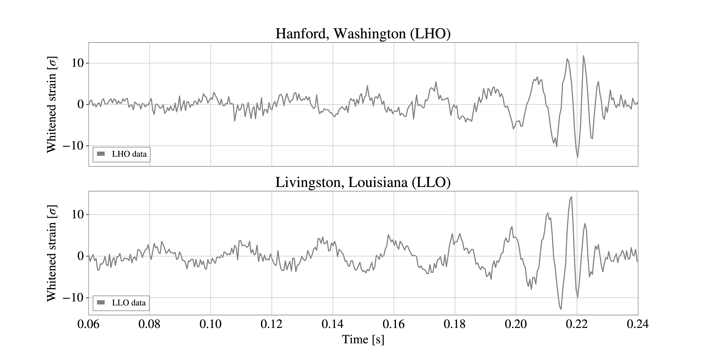
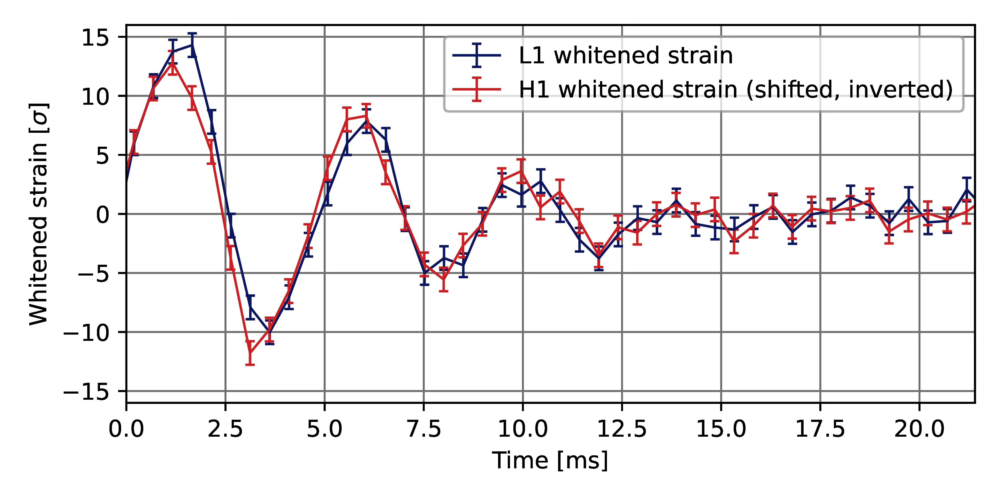
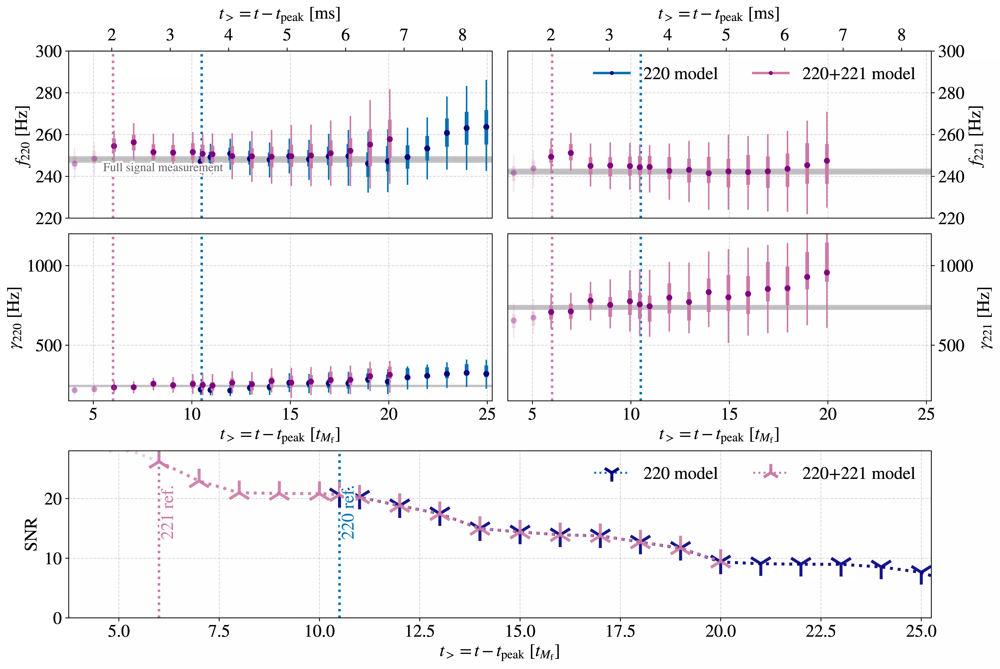
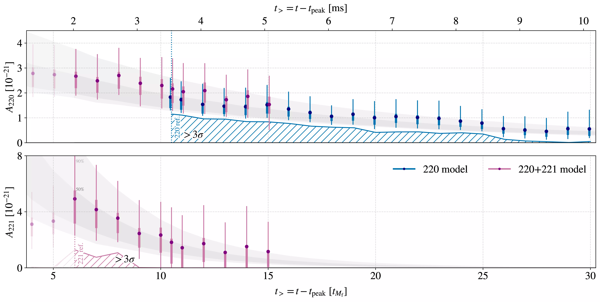
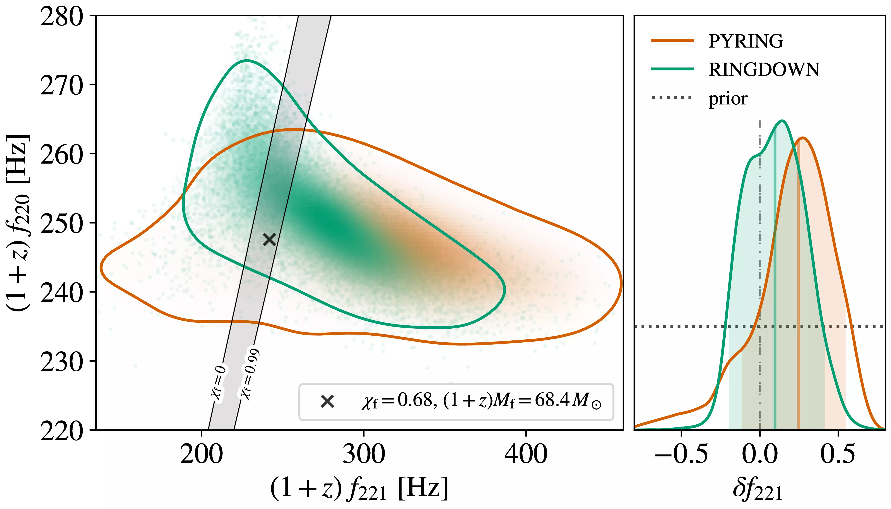
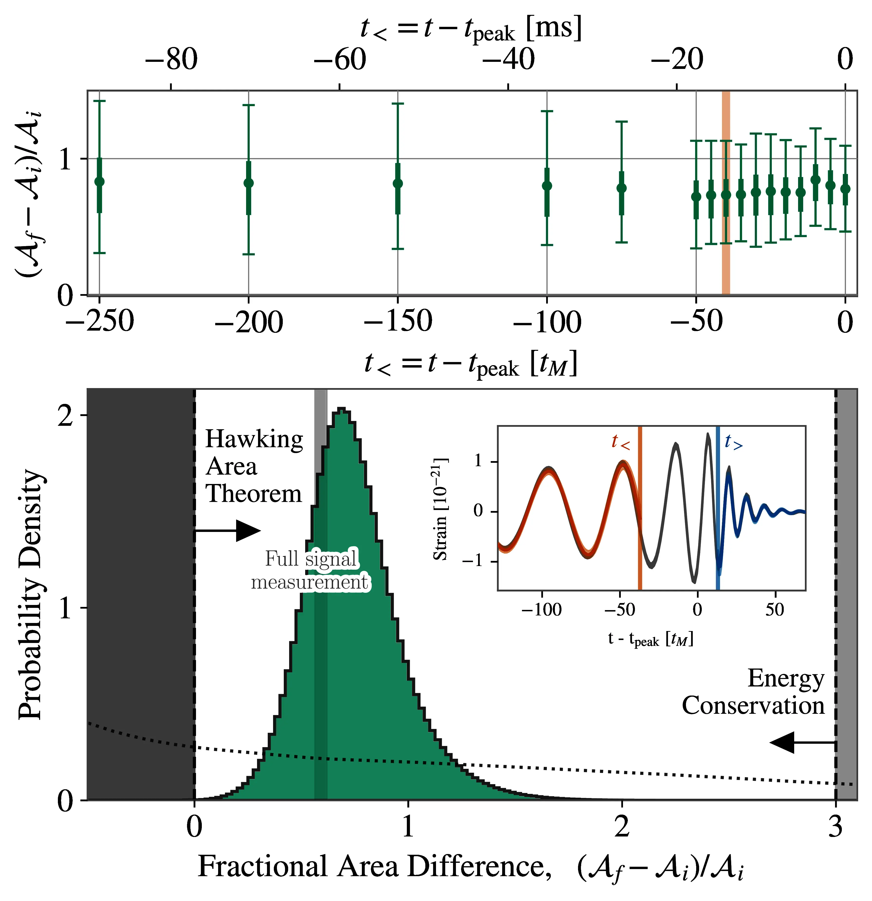
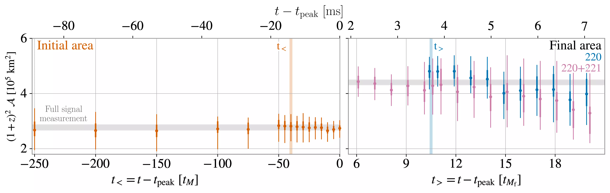

In this chapter, we present the results of the discovery paper for the event GW250114, the clearest to date, which enabled us to perform a high-significance test of Hawking’s area law, as well as black hole ringdown spectroscopy (Abac et al. 2025).
The current chapter and the two following it will discuss the “anatomy” of a gravitational wave signal, the way it is parameterized, and the way it appears in our detectors, using GW250114 as an example wherever possible, but also with an eye toward low frequencies, which we will then expand on in Chapter 8. The current chapter will focus on ringdown, as this is what allowed for the most prominent scientific results with GW250114. Chapter 5 will describe the intrinsic modelling of a gravitational wave signal, with parameters such the masses and spins of the two component objects, eccentricity, tidal effects. In Chapter 6 we will bring the signal from source to detector, discussing the impact of spin-induced precession, detector motion and antenna patterns.
4.1 The signal
On January 14th, 2025, the LIGO-Virgo-KAGRA collaboration detected the clearest binary black hole merger to date: its signal to noise ratio was between 77 and 80.
The signal is clearly visible in the data with minimal processing: Figure 4.1 shows whitened strain data (see Section 3.2.3) from the Hanford and Livingston detectors.

Figure 4.1: Whitened strain for GW250114 in the Livingston and Hanford detectors. Adapted from Abac et al. (2025).
We will attempt to give an outline of the essential physics of binary mergers, starting from what can be gleaned from the “bare” data without the need to invoke complex models (Collaboration et al. 2017).
We can visually identify the sections of the waveform emitted by a black hole coalescence:
an inspiral, whose amplitude and frequency rise over time;
a merger, where the signal amplitude peaks;
a ringdown, characterized by strongly damped oscillations.
Indeed, if we overlay the general relativistic prediction for a binary merger (Figure 4.2) we can see that it matches very closely.
Figure 4.2: Upper panel: whitened strain for GW250114 in the Livingston and Hanford detectors, along with modelled and unmodelled waveform reconstructions. Lower panel: a time-frequency spectrogram of the whitened data. Adapted from Abac et al. (2025).
4.2 Ringdown
After the coalescence of two Kerr black holes, the remnant quickly settles into a quiescent state, emitting gravitational radiation in a process called ringdown.

Figure 4.3: Whitened strain in the ringdown of GW250114. The data from the Hanford detector was shifted in time and inverted to account for its different position and antenna patterns compared to Livingston.
The qualitative behaviour of this regime, a damped sinusoid, is apparent in Figure 4.3. Indeed, the dominant late-time behavior of this radiation can be described, at the perturbative level, in terms of quasi-normal modes (QNMs), whose complex frequencies \(\omega_{\ell mn} = 2 \pi f_{\ell mn} - i / \tau_{\ell mn}\) are well-understood functions of the black hole properties: mass \(M_{f}\) and spin magnitude \(\chi_{f}\).1
1 Even at the perturbative level, this description is not complete, especially at early times (De Amicis et al. 2026).
Source code
import qnmimport astropy.units as uimport astropy.constants as acimport numpy as npfrom IPython.display import Markdowndef get_f_tau(M, chi, l, m, n): q22 = qnm.modes_cache(-2, l, m, n) omega, _, _ = q22(a=chi) f = np.real(omega) / (2* np.pi) / (ac.G * M / ac.c**3) tau =1/(- np.imag(omega) / (ac.G * M / ac.c**3))return f.to(u.Hz), tau.to(u.ms)M =68.4*u.Msunchi =0.68f_220, tau_220 = get_f_tau(M, chi, 2, 2, 0)Markdown(f'For example, a remnant black hole with $M_f={M.to(u.Msun).value:.1f}M_\odot$ and $\chi_f={chi:.2f}$ 'f'has a fundamental frequency of $f_{{220}}=${f_220.to_string(precision=3, format="latex_inline")} 'f'and a damping time of $\\tau_{{220}}=\\mathrm{{{tau_220:.2f}}}$.')
For example, a remnant black hole with \(M_f=68.4M_\odot\) and \(\chi_f=0.68\) has a fundamental frequency of \(f_{220}=\)\(248 \; \mathrm{Hz}\) and a damping time of \(\tau_{220}=\mathrm{4.13 ms}\).
The fact that \(f_{220} \approx 1/\tau_{220}\) means that the sinusoid corresponding to this mode is approximately suppressed by a factor \(e\) every cycle. This decay is comparatively slow for a mode: most other QNMs are suppressed even faster (Berti et al. 2025).
In terms of these modes, the gravitational wave polarizations from a Kerr black hole’s ringdown can be expressed as (Berti et al. 2025, equation 6.12):2\[
h_{+}(t)-ih_{\times}(t) \approx \sum_{\ell=2}^{\infty} \sum_{m=-\ell}^{\ell} \sum_{n=0}^{\infty} A_{\ell mn} \exp(i(\omega^{x}_{\ell mn}(t-t_\text{ref})+\phi^{x}_{\ell mn})) S_{\ell mn}\,.
\]
2 This expression only considers prograde modes, which co-rotate with the remnant black hole’s spin; retrograde ones are hardly excited for quasi-circular binaries.
The quantities \(S_{\ell mn}\) are spin-weighted spheroidal harmonics, a deformation of the spin-weighted spherical harmonics \(Y_{\ell m}\) depending on the oblateness parameter \(a \omega\), where \(a\) is the black hole’s spin while \(\omega\) is the mode’s angular frequency.
Predicting the amplitudes of these modes is in general hard, doing so in the generic-orbit case is in fact an open problem (Carullo 2025).
Ringdown analyses may be performed at several levels of model-dependence, ranging from a purely data-driven fit with damped sinusoids to imposing a prescription for the Kerr spectrum as well as the mode amplitudes (Berti et al. 2025, table 7). The fits we will describe in Section 4.3 are model-dependent, imposing a Kerr spectrum but not the mode amplitudes.
In order to isolate the ringdown, one generally analyzes data starting after the coalescence, with the time domain data analysis techniques described in Section 3.2.2. Choosing a start time, however, poses a conundrum: the initial spacetime at the collision is highly dynamical and nonlinear, and it only approaches the perturbative regime in which the QNM description is formulated asymptotically. This is at the core of a fundamental tension in ringdown science: the perturbative assumption is better verified the further along in time one starts, but the signal is quickly decaying and starting too late means losing valuable data.

Figure 4.4: Frequencies, damping times and SNRs as a function of analysis start time in the ringdown of GW250114. Adapted from Abac et al. (2025).
In figure Figure 4.4 this tension is visible for GW250114: the horizontal axis in all panels is the analysis start time, expressed in units of the characteristic timescale corresponding to the detector-frame remnant mass, \(t_{M_{f}} = (1+z) G M_{f} /c^{3} \approx 337 \upmu \text{s}\). The SNR quickly decreases with time, and the errors on the measured parameters — frequencies and damping times of the fundamental ringdown mode and its first overtone — accordingly increase with start time.
While this problem remains here as in all ringdown analyses, another fact to notice in Figure 4.4 is the very high magnitude of the ringdown-only SNR. As far as \(20 t_{M_{f}}\) after the peak it is of the order of 10, more than the entirety of some other gravitational wave signals.
4.3 Detection of the 221 overtone
The exceptional SNR of GW250114 allowed for the confident detection of the \(\ell m n = 221\) overtone in the data. Its amplitude was constrained to be non-vanishing: Figure 4.5 illustrates posterior distributions on the 220 and 221 amplitudes. There is a temporal window, between 6 and 8 \(t_{M_{f}}\) after the peak, during which the overtone amplitude is constrained to be larger than 0 at more than \(3 \sigma\).

Figure 4.5: Posterior distributions for the amplitudes of the fundamental and first overtone of GW250114. More details in the text. Adapted from Abac et al. (2025).
The grey bands in the figure indicate the theoretical expectation for the exponential decay of the two modes. They are obtained by considering the posterior samples at the reference time for that analysis (\(6 t_{M_{f}}\) for the 221, \(10.5t_{M_{f}}\) for the 220), and evolving them backward and forward in time according to their respective amplitude and decay time. The grey band is then computed by considering the HPD intervals with 50 and 90% credibility (see Section 2.1.1.1).
4.3.1 Spectroscopic test of the Kerr metric
The confident detection of a 221 overtone enabled a spectroscopic test of General Relativity: we performed an analysis which constrained the two ringdown tones to their values with the Kerr metric, but also allowed for a deviation in the frequency and damping rate of the 221 tone: \[
f_{221} = e^{\delta f_{221}} f_{221}^{\text{Kerr}}
\qquad
\text{and}
\qquad
\gamma_{221} = e^{\delta \gamma_{221}} \gamma_{221}^{\text{Kerr}}\,.
\]
This allowed the two modes to freely vary, independently of each other. In the right panel of Figure 4.6 we show the posterior distribution on the deviation parameter \(\delta f_{221}\): it is constrained to be close to zero, a null result. The prior on the deviation parameter is also shown. We can visually compare the ratio of posterior and prior, which constitutes the evidence based on this data against a deviation from General Relativity (see Equation 2.7). The precise value of this number depends on many analysis details; qualitatively, we can say we found weak evidence against a deviation from General Relativity.
The left panel offers an alternative perspective on the same result: we show the two-dimensional posterior distribution on the frequencies \((1+z)f_{220}\) and \((1+z)f_{221}\).3 The grey diagonal band shows the range of possible combinations of values under the Kerr assumption.
3 The quantities in the plot are the measured frequencies at the detector. Due to cosmological effects we expect them to be redshifted by a factor \((1+z)\) — see also Section 6.1.3.
The two estimated frequencies change as a function of detector-frame remnant mass \((1+z)M_{f}\) and spin \(\chi_{f}\); these are free parameters, informed only by the ringdown, hence their wide posterior distributions. If we were to use the whole signal, as opposed to only its ringdown, to inform our estimates of these paramters, we would get precise values near the black cross.

Figure 4.6: Spectroscopic test of the 221 QNM’s frequency with GW250114. The left panel shows the posterior distribution on the 220 and 221 detector-frame frequencies, with a grey band indicating which combinations of these are allowed within General Relativity; the predicted ratio depends on the mass and spin of the remnant, hence we also mark the maximum-likelihood values for these based on the full-signal analysis. In the left panel, we show the prior and posterior distributions on the parameter \(\delta f_{221}\). PYRING and RINGDOWN refer to two independent analysis pipelines we adopted. Adapted from Abac et al. (2025).
4.4 Area law
The possibility to independently analyze the inspiral and ringdown also provided the opportunity to validate Hawking’s area law: the statement that the horizon area of black holes in the universe must increase over time.
This law is fundamentally related to the second law of thermodynamics, \(\text{d} S \geq 0\), which dictates that the entropy of a closed system is non-decreasing. The entropy \(S\) of a black hole is encoded in its surface area \(A\)(Hawking 1971), as \(S = k_{B} c^{3} A / 4 G \hbar\).
Quantum effects at the horizon (i.e. Hawking radiation) can be incorporated in a generalized second law (Bekenstein 1974), though they are negligible at the scales we are probing. Probing Hawking’s law means probing its assumptions:
General Relativity, a metric theory of driven governed by Einstein’s equations \(G_{\mu \nu} = 8 \pi G c^{-4} T_{\mu \nu}\), which derive from an action in the form \(S = \int R \text{d}^{4}x\), holds.
The observed objects are black holes and follow the weak censorship principle, which disallows the existence of naked singularities.
The null-energy condition holds, meaning that for any null vector field \(\xi\) (i.e. satisfying \(g_{\mu \nu}\xi^{\mu} \xi^{\nu} = 0\)) the stress tensor satisfies \(T_{\mu \nu} \xi^{\mu} \xi^{\nu} \geq 0\).
We do not have direct access to the areas of the black holes; in order to probe Hawking’s law we must estimate them based on the parameters which affect the available data. The surface area of a Kerr black hole is given in terms of its mass \(M\) and spin magnitude \(\chi\) by: \[ A(M, \chi) = 8 \pi \left( \frac{GM}{c^{2}} \right)^{2} \left( 1+\sqrt{ 1-\chi^{2} } \right) \,.
\]
Applying this formula to our data means assuming that GW250114 was produced by a binary systems of black holes, and both the two initial components and the remnant are described by the Kerr metric. Furthermore, we need to assume that General Relativity provides a good description of binary dynamics in the weak field regime, corresponding to the early inspiral.
We do not, however, need to assume that our understanding of GR is correct in its strong-field regime, at merger: the exceptionally high SNR of this signal allows us to excise the merger part of our signal, and extract the component and remnant areas from independent analyses of the early inspiral and late ringdown. The fractions of data analyzed can be seen in the inset of Figure 4.7 . In order to have a statistically sound analysis of the truncated data, we need to use time-domain techniques (Section 3.2.2) both for the inspiral and for the ringdown.
In the context of a binary coalescence, Hawking’s law translates to the statement that the remnant area should be larger than the sum of the component areas: \[
A_{1} + A_{2} = A_{i} \leq A_{f}\,.
\]
The inspiral and ringdown analyses do not directly give us access to the mass \(M\) of the black holes: instead, the signal directly depends on detector frame masses, in the form \((1+z)M\) — see Section 6.1.3 — and therefore we can only probe “redshifted areas” in the form \((1+z)^{2}A\). Fortunately, this does not diminish the power of our analysis, as the ratio \((A_{f} - A_{i} ) / A_{i}\) is independent of the signal’s redshift.

Figure 4.7: Posterior distribution for the fractional area change of GW250114. We describe the meaning of the panels in the text. Adapted from Abac et al. (2025).
The lower panel of Figure 4.7 illustrates the posterior distribution on this quantity, which excludes a negative area variation to high credibility. The green histogram corresponds to the aforementioned analysis performed while independently considering the pre- and post-merger sections of the signal. The upper panel showcases the robustness of this result to varying the cut time for the inspiral; the main result we quote is the one obtained when truncating the inspiral waveform \(40t_M\) before the merger and starting the ringdown analysis \(10.5 t_{M_f}\) after the merger.
For reference, in the lower panel we also show the constraints on the change in area obtained when coherently analyzing the whole signal (“Full signal measurement”). While this is significantly more precise, General Relativity being correct is assumed to obtain this result, so it cannot function as a test of it.
Hawking’s area theorem predicts \(A_{f} - A_{i} > 0\), which we show in the lower panel as a vertical dashed line. Furthermore, if we assume that energy is conserved, an upper bound for the change in area can be found by considering two maximally-spinning black holes with mass \(M_1 = M_2 = M\) and \(\chi = 1\) form a minimally spinning black hole with mass \(2M\) and spin \(\chi = 0\). Then, we will have \(A_f = 4 A_i\), or \((A_{f} - A_{i} ) / A_{i} = 3\). We show the region excluded by this argument in light grey.
We further explore the robustness of this result in Figure 4.8; the rapid decay in the ringdown signal makes the choice of cut time there significantly more impactful than that in the inspiral. Despite this, the statement \(A_{f} - A_{i} > 0\) is robustly verified for a wide range of choices for the end time of the inspiral analysis, \(t_<\), and the start time of the ringdown analysis, \(t_>\).

Figure 4.8: Robustness of the fractional area change of GW250114 to changes in cut times. For various choices of cut time, we show the corresponding 90% interval and median for the posterior distribution on the initial and final black hole area respectively. For the final area, we show results obtained both with an analysis including both 220 and 221 overtones, as well as with an analysis including only the 220 one. Adapted from Abac et al. (2025).